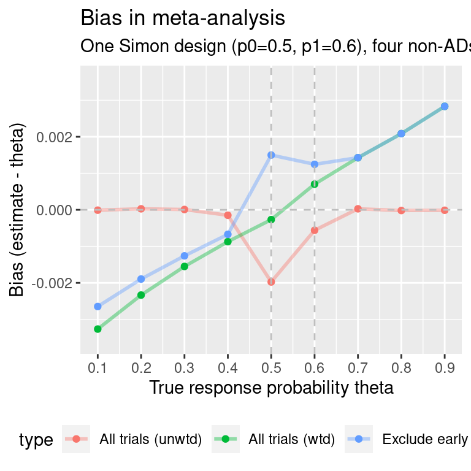
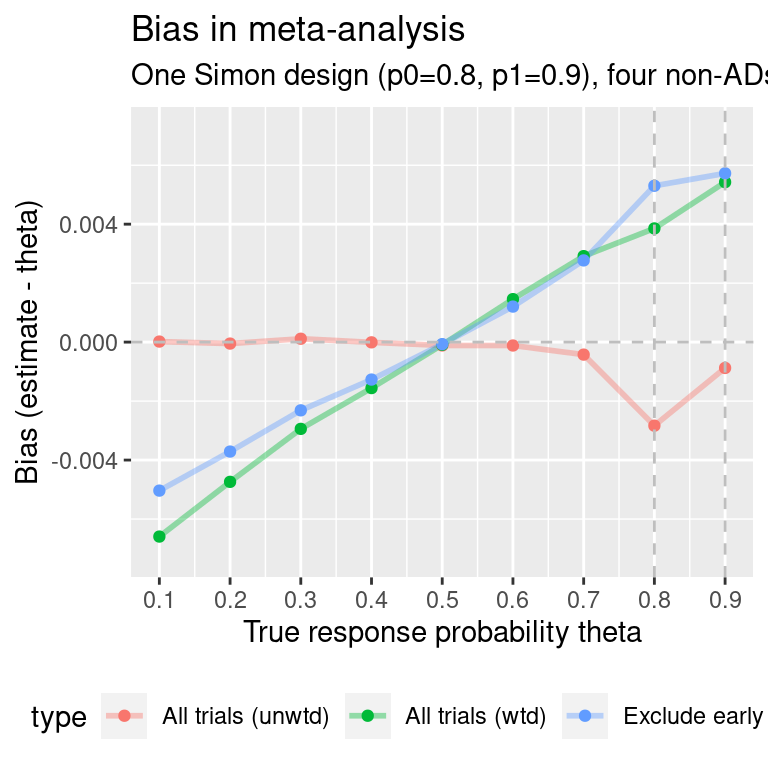
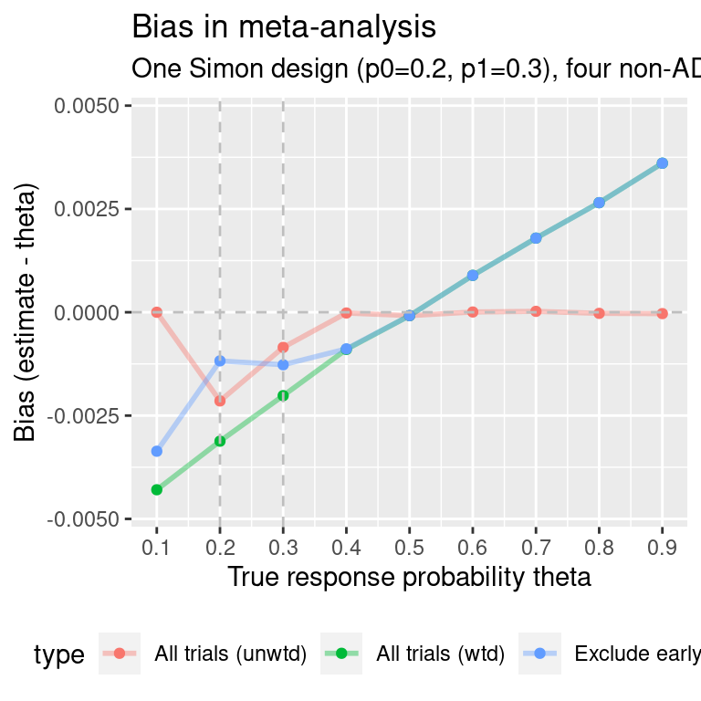
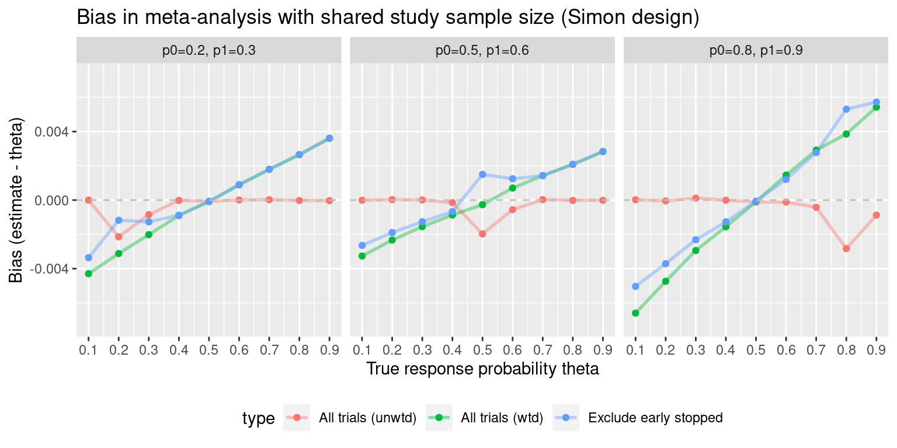

Meta-analysis: Simon design
MA_simon.RmdFind a Simon design with p0=0.5, p1=0.6, type-I error-rate 0.05, power 0.9:
all.designs <- clinfun::ph2simon(pu=0.5,
pa=0.6,
ep1=0.05,
ep2=0.1,
nmax=500)
# Choose optimal Simon design:
opt.index <- which.min(all.designs$out[, "EN(p0)"])
simon.des <- all.designs$out[opt.index, ]Now simulate meta-analyses of a single Simon design and some number of single-arm single-stage trials with the same maximum sample size N as the Simon design. We also choose the true response probability theta.
set.seed(1453)
ma.simon.results <- maSimon(theta=0.5,
des=simon.des,
nsims=1e5,
n.studies=4)
ma.simon.results
#> reps mean.studies bias mean.se theta
#> All trials (unwtd) 1e+05 5.00000 -0.0018840546 NA 0.5
#> All trials (wtd) 1e+05 5.00000 -0.0001644115 0.01534872 0.5
#> Exclude early stopped 1e+05 4.31159 0.0016161032 0.01600010 0.5
#> type
#> All trials (unwtd) All trials (unwtd)
#> All trials (wtd) All trials (wtd)
#> Exclude early stopped Exclude early stoppedWhat does the bias look like as theta is varied?
theta.vec.0.5 <- seq(0.1, 0.9, 0.1)
ma.simon.results0 <- vector("list", length(theta.vec.0.5))
for(i in 1:length(theta.vec.0.5)){
ma.simon.results0[[i]] <- maSimon(theta=theta.vec.0.5[i],
des=simon.des,
nsims=1e5,
n.studies=4)
}
ma.simon.results0 <- do.call(rbind, ma.simon.results0)
#ma.simon.results0$p0p1 <- bquote(p[0]==0.5~","~p[1]==0.6)
ma.simon.results0$p0p1 <- "p0=0.5, p1=0.6"
p0=0.8
As with the single Simon design, let us examine what happens when the response rate is not close to 0.5. Here, we obtain a Simon design for p0=0.8, p1=0.9:
all.designs2 <- clinfun::ph2simon(pu=0.8,
pa=0.9,
ep1=0.05,
ep2=0.1,
nmax=150)
# Choose optimal Simon design:
opt.index <- which.min(all.designs2$out[, "EN(p0)"])
simon.des2 <- all.designs2$out[opt.index, ]Again, simulate meta-analyses of this Simon design and single-arm single-stage trials with the same maximum sample size N as the Simon design:
theta.vec <- seq(0.1, 0.9, 0.1)
ma.simon.results2 <- vector("list", length(theta.vec))
for(i in 1:length(theta.vec)){
ma.simon.results2[[i]] <- maSimon(theta=theta.vec[i],
des=simon.des2,
nsims=1e5,
n.studies=4)
}
ma.simon.results2 <- do.call(rbind, ma.simon.results2)
ma.simon.results2$p0p1 <- "p0=0.8, p1=0.9"#> Warning: Removed 2 row(s) containing missing values (geom_path).
#> Warning: Removed 2 rows containing missing values (geom_point).
p0=0.2
Obtain a Simon design for p0=0.2, p1=0.3:
all.designs3 <- clinfun::ph2simon(pu=0.2,
pa=0.3,
ep1=0.05,
ep2=0.1,
nmax=200)
# Choose optimal Simon design:
opt.index <- which.min(all.designs3$out[, "EN(p0)"])
simon.des3 <- all.designs3$out[opt.index, ]Again, simulate meta-analyses of this Simon design and single-arm single-stage trials with the same maximum sample size N as the Simon design:
theta.vec.low <- seq(0.1, 0.9, 0.1)
ma.simon.results3 <- vector("list", length(theta.vec.low))
for(i in 1:length(theta.vec.low)){
ma.simon.results3[[i]] <- maSimon(theta=theta.vec.low[i],
des=simon.des3,
nsims=1e5,
n.studies=4)
}
ma.simon.results3 <- do.call(rbind, ma.simon.results3)
ma.simon.results3$p0p1 <- "p0=0.2, p1=0.3"
# Biggest improvement in bias:
#max(abs(ma.simon.results3$bias[ma.simon.results3$type=="All trials"])-abs(ma.simon.results3$bias[ma.simon.results3$type=="Exclude early stopped"]))
#> Warning: Removed 2 rows containing missing values (geom_point).